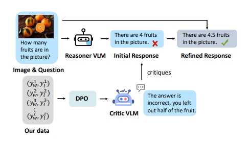
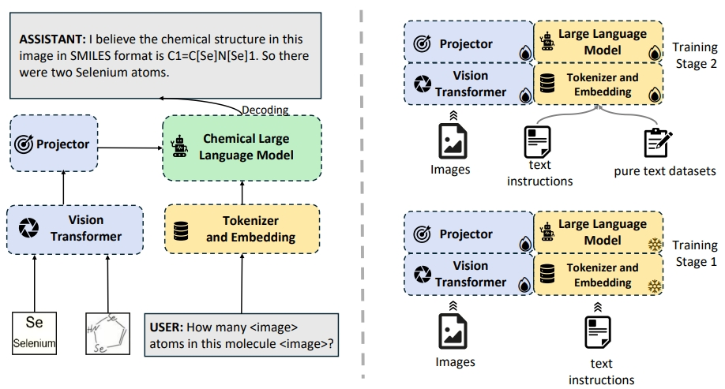
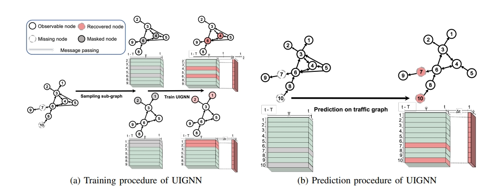
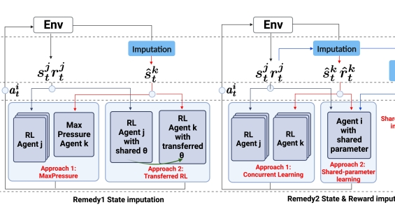
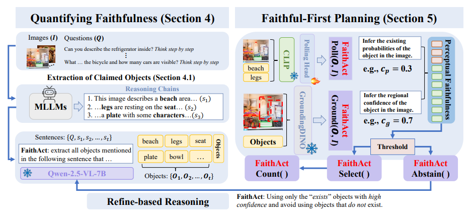

|
Junxian Li I'm a Ph.D. student at Shanghai Jiao Tong University, shanghai, China. I'm now advised by assistant prof. Yulun Zhang. I'm working on MLLMs, unified models and model reasoning. I've been advised by prof. Haojin Zhu in 2024-2025. At Xi'an Jiaotong University I've worked on graph learning and data mining. I've worked as a remote research intern at DaRL Group with assistant prof. Hua Wei for one year. (also co-advised by assistant prof. Bin Shi).
Email: |
Research /
I'm interested in AI security, data mining and GNNs. Representative papers are highlighted. |

{kind=link}
|
|

|
Critic-V: VLM Critics Help Catch VLM Errors in Multimodal Reasoning
Di Zhang*, Junxian Li*, Jingdi Lei*, Xunzhi Wang*, Yujie Liu, Zonglin Yang, Jiatong Li, Weida Wang, Suorong Yang, Jianbo Wu, Peng Ye, Wanli Ouyang, Dongzhan Zhou Proceedings of the Computer Vision and Pattern Recognition Conference, 9050-9061 arXiv / Conference Version 
We introduce Critic-V, a novel framework inspired by the Actor-Critic paradigm to boost the reasoning capability of VLMs. |
|

|
ChemVLM: Exploring the Power of Multimodal Large Language Models in Chemistry Area
Junxian Li, Di Zhang, Xunzhi Wang, Zeying Hao, Jingdi Lei, Qian Tan, Cai Zhou, Wei Liu, Yaotian Yang, Xinrui Xiong, Weiyun Wang. Zhe Chen, Wenhai Wang, Wei Li, Shufei Zhang, Mao Su, Wanli Ouyang, Yuqiang Li, Dongzhan Zhou Proceedings of the AAAI conference on artificial intelligence, 2025 project page / arXiv / Conference Version 

We propose ChemVLM, an open-source multimodal large language model for chemical tasks. |
|

|
Uncertainty-aware Traffic Prediction under Missing Data
Hao Mei, Junxian Li, Zhiming Liang, Guanjie Zheng, Bin Shi, Hua Wei* 23rd IEEE International Conference on Data Mining (ICDM), 2023 project page / arXiv / Conference Version / 
Uncertainty quantification (like dropout and evidential deep learning) can be used for better sensor deployment on spatio-temporal traffic prediction. |
|

|
Reinforcement Learning Approaches for Traffic Signal Control under Missing Data
Hao Mei, Junxian Li, Bin Shi, Hua Wei* International Joint Conferences on Artifical Intelligence(IJCAI), 2023 project page / arXiv / Conference Version / 

Using DQNs to solve traffic signal control problems under missing data scenario. |

|
Teaching MLP More Graph Information: A Three-stage Multitask Knowledge Distillation Framework
Junxian Li, Bin Shi*, Erfei Cui, Hua Wei Qinghua Zheng Arxiv preprint arxiv, 2023 arXiv / 
With position encoding and graph heat kernel learning, MLPs can learn topology knowledge of graphs and performance of knowledge distillation between GNNs and MLPs can be obviously improved. |
|

|
FaithAct: Faithfulness Planning and Acting in MLLMs
Junxian Li, Xinyue Xu, Sai Ma Sichao Li Arxiv preprint arxiv, 2025 arXiv / 
We introduce FaithEval and FaithAct, a unified framework that evaluates and enforces step-level perceptual faithfulness in multimodal reasoning, significantly improving grounding and stability without sacrificing task performance. |
Education |
 |
Xi'an Jiaotong University
2020.09 - 2024.07 B.E. in Computer Science and Technology GPA: 94.27 (+2) / 100.0 [top 1.5%] Advisor: Assistant Prof. Bin Shi |
|
Shanghai Jiaotong University
2024.09- Postgraduate in Computer Science and Technology Advisor: Prof. Haojin Zhu |
Honors&Awards |
|
|
Services&Academic Experiences |
|
|
Hobbies |
|
Feel free to steal this website's source code. Do not scrape the HTML from this page itself, as it includes analytics tags that you do not want on your own website — use the github code instead. Also, consider using Leonid Keselman's Jekyll fork of this page. |